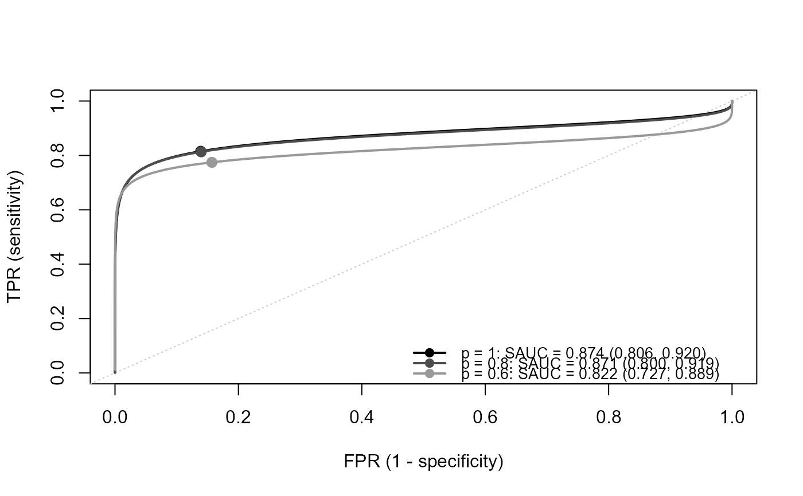
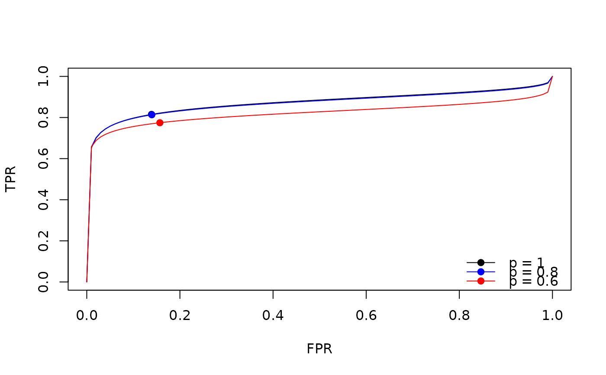
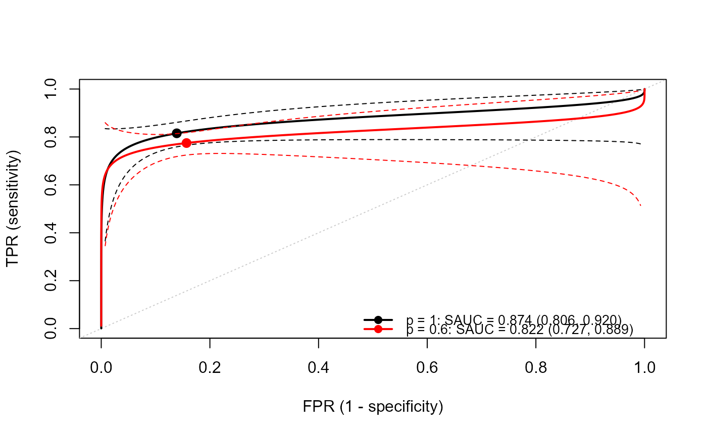

Plot method for 'srocsa' objects.
This function plots the SROC curves and the summary points for each marginal selection probability \(p\),
from the sensitivity analysis by srocsa.t or tsrocsa.lrt.
For srocsa.t, one plot is created.
For tsrocsa.lrt, one plot is created at each time point, with the title time = xx;
in an interactive session the user is prompted ("Hit <Return> to see next plot")
before each new time point.
The same \(p\) has the same color and line type at all the time points.
Alternatively, all the time points can be overlaid in one panel (overlay = TRUE):
the color indicates the time point and the line type indicates \(p\).
Usage
# S3 method for class 'srocsa'
plot(
x,
time = NULL,
p = NULL,
overlay = FALSE,
ask = NULL,
sroc.cols = NULL,
sroc.lty = 1,
sroc.lwd = 2,
add.spoint = TRUE,
sp.pch = 19,
sp.cex = 1.2,
plot.ci = FALSE,
spoint.region = FALSE,
ci.level = 0.95,
ci.lty = 2,
ci.lwd = 1,
add.study = FALSE,
study.size = c("fixed", "precision"),
study.pch = 1,
study.cex = 1,
study.col = NULL,
add.sauc = TRUE,
legend.pos = "bottomright",
legend.cex = 0.85,
main = NULL,
xlab = "FPR (1 - specificity)",
ylab = "TPR (sensitivity)",
n.grid = 300,
...
)Arguments
- x
A fitted object returned by the function
srocsa.tortsrocsa.lrt.- time
Time points to plot (only for the results from
tsrocsa.lrt). Iftime = NULL(default), all the time points are plotted.- p
Values of the marginal selection probability \(p\) to plot. If
p = NULL(default), all the values are plotted.- overlay
Logical; if
TRUE, all the selected time points oftsrocsa.lrtare drawn in one panel (ignored forsrocsa.t, which has one panel).- ask
Logical; whether to wait for <Return> before each new time point. Default
NULLmeansTRUEwhen more than one plot is drawn on an interactive device.- sroc.cols
Colors of the SROC curves: one for each \(p\), or one for each time point when
overlay = TRUE. Default uses grey colors (black for the first \(p\)), andhcl.colors(palette"Dark 3") for the time points whenoverlay = TRUE.- sroc.lty
Line types of the SROC curves, recycled over \(p\). When
overlay = TRUEand it is not specified,1, 2, 3, ...are used for the values of \(p\).- sroc.lwd
Line width of the SROC curves.
- add.spoint
Whether to add the summary points on the SROC curves.
- sp.pch
Type of the summary points.
- sp.cex
Size of the summary points.
- plot.ci
Whether to add the pointwise confidence bands of the SROC curves (delta method using
var.ml).- spoint.region
Whether to add the confidence regions of the summary points.
- ci.level
Confidence level of the bands and regions. Default 0.95.
- ci.lty, ci.lwd
Line type and width of the bands and regions.
- add.study
Whether to add the observed (published) studies (\((1 - \mathrm{spec}_i, \mathrm{sens}_i)\), after continuity correction), stored in the attribute
"data"ofx.- study.size
Size of the study points:
"fixed"(default) or"precision", proportional to \(1/\sqrt{v_1 + v_2}\) relative to its mean.- study.pch, study.cex
Symbol and (base) size of the study points.
- study.col
Color of the study points. Default
NULLuses grey, or the (semi-transparent) color of each time point whenoverlay = TRUE.- add.sauc
Whether to show the SAUC (and its CI) for each \(p\) in the legend.
- legend.pos
Position of the legend. See
legend.NULLsuppresses the legend.- legend.cex
Size of the legend text.
- main
Title of the plot. If
main = NULL(default),time = xxis used for the time-dependent results ("Time-dependent SROC curves"whenoverlay = TRUE), and no title for the results fromsrocsa.t.- xlab
Label of x-axis.
- ylab
Label of y-axis.
- n.grid
Number of grid points to draw each curve.
- ...
Other arguments in function
plot.default.
Details
For \(p < 1\) in tsrocsa.lrt, the SROC curve is calculated from
\((\mu_1, \mu_2, \tau_1, \tau_2, \rho_1)\) of the trivariate model,
i.e., the parameters of the logit-transformed sensitivity and specificity.
Examples
## load data
data(IVD)
fit1 <- srocsa.t(TP = TP, FN = FN, TN = TN, FP = FP, data = IVD, sa.p = c(1, 0.8, 0.6))
plot(fit1)

## set the colors and add the studies
plot(fit1, sroc.cols = c("black", "blue", "red"), add.study = TRUE)

## only p = 1 and p = 0.6, with confidence bands
plot(fit1, p = c(1, 0.6), plot.ci = TRUE, sroc.cols = c("black", "red"))

# \donttest{
## time-dependent results (see ?tsrocsa.lrt for fit2)
## plot(fit2) # one plot per time point; press <Return> for the next
## plot(fit2, time = 60) # one time point
## plot(fit2, overlay = TRUE) # all time points in one panel (color: time, line type: p)
## plot(fit2, overlay = TRUE, p = 0.8) # all time points for one p
# }